| ・ 体験学習リハーサル (H23.08.03-04) | |||
例年、機械システム工学部門はものづくり体験学習という一般向けの講座を開いています。今回はそのリハーサル。参加者が行う鋳造を説明員役のM1が練習します。鋳造は精密部品の作成にも使われるロストワックス法です。 |
|||
|
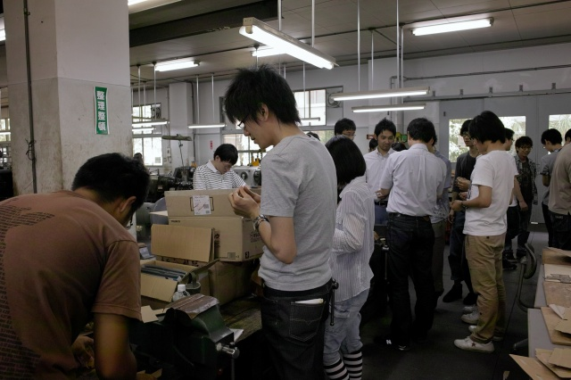
ワックスで造形中 |
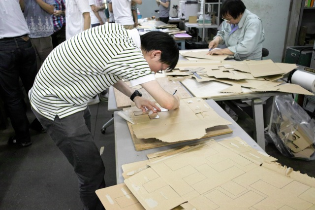
H野くん、型の箱を作ってます | ||
|
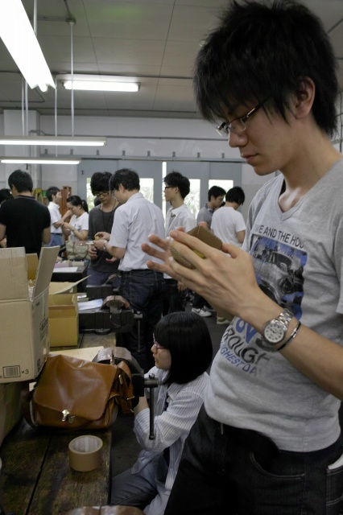
K城くん、K岡さん、いろいろ調整中 |
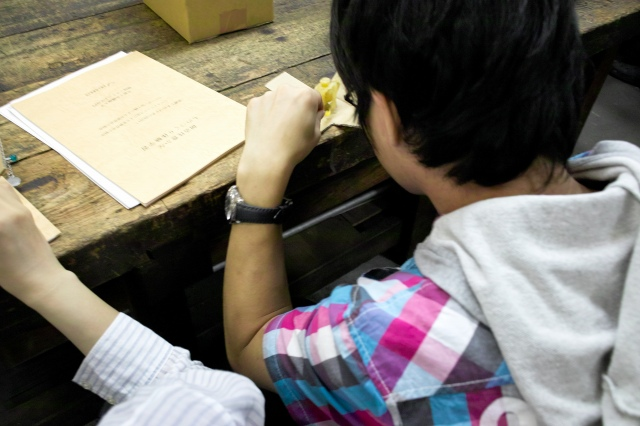
F島くん、湯口と空気孔作成中 | ||
|
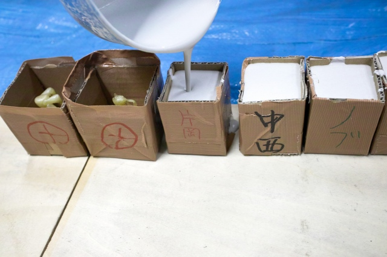
石膏を流し込みます |
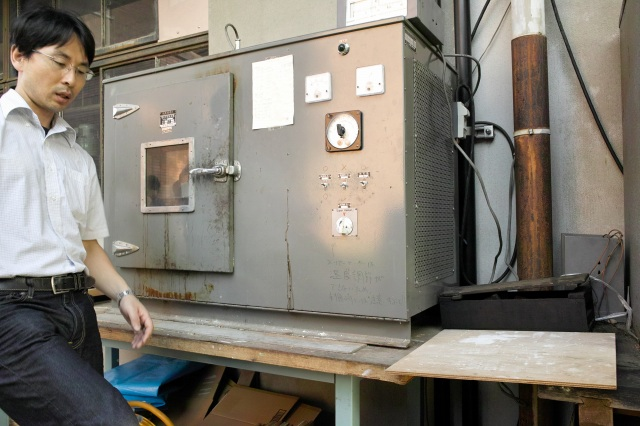
石膏が乾いたらワックスを一晩加熱して抜きます | ||
|
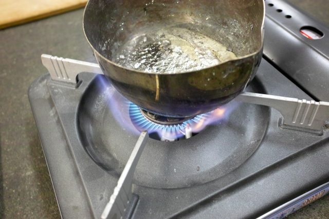
翌日、いよいよ型に流し込み |
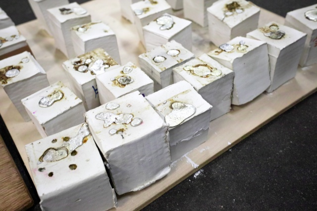
冷却中 | ||
|
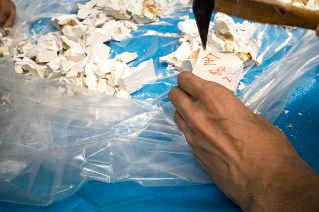
あとは型を割って取りだし |
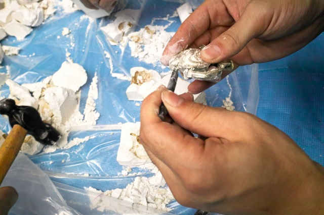
細かい石膏屑をとります | ||
|
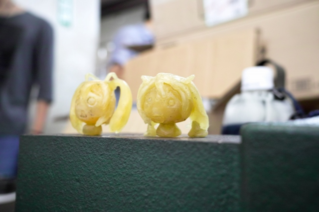
F島くんのワックス造形 |
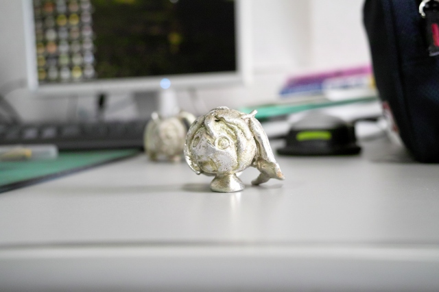
完成度高けーなオイ | ||
|
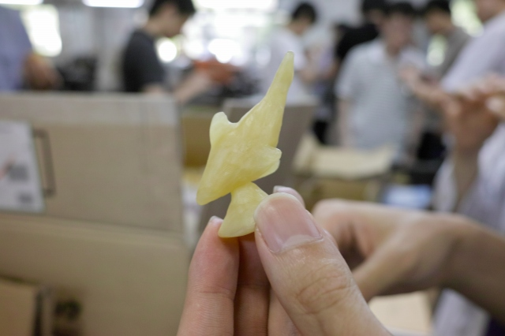
K城くんのワックス造形 |
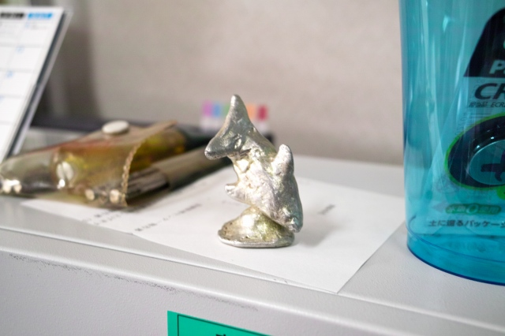
思ったようにできたとのこと | ||
|
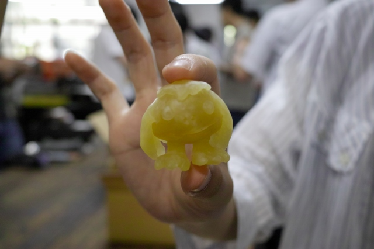
K岡さんのワックス造形 |
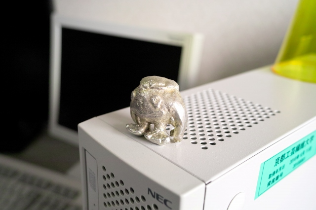
ゲームのキャラだそうです | ||
|
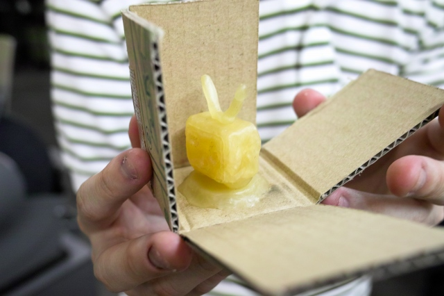
H野くんのワックス造形 |
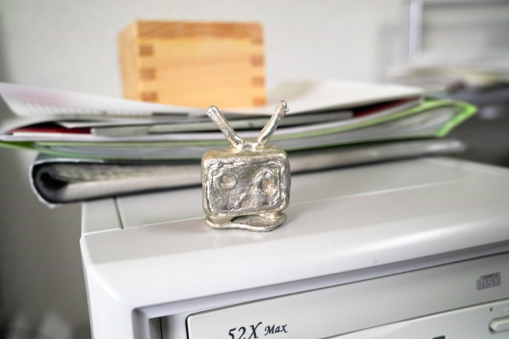
左上のヤツですね | ||
|
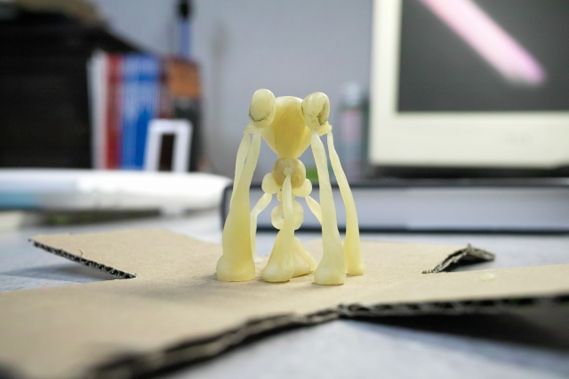
ちゃっかり参加、助教の人のワックス造形 |
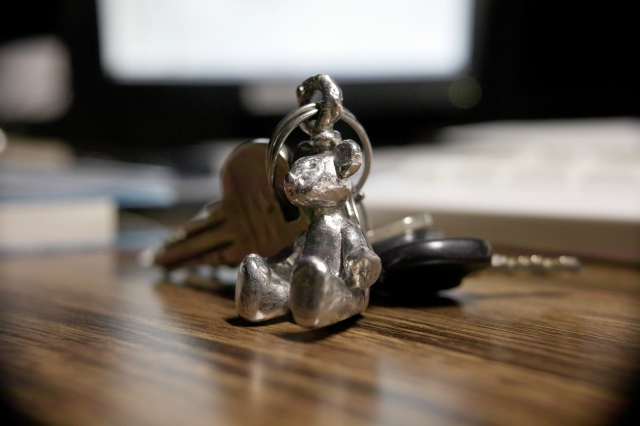
今年はカワイイのを目指したそうです | ||